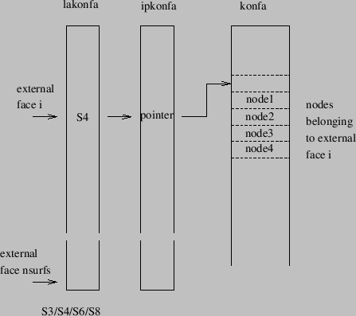
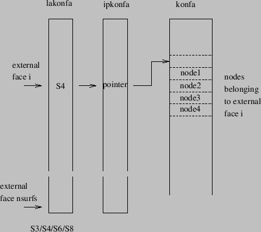
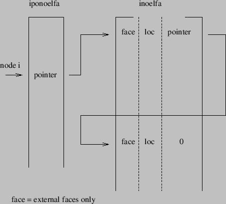

Keyword type: model definition, material
With this option the specific gas constant of a material can be defined. The specific gas constant is required for a calculation in which a gas dynamic network is included. The specific gas constant  is defined as
is defined as
| (728) |
where  J
J kmol
kmol K is the universal gas constant and
K is the universal gas constant and  is the molecular weight of the material. The specific gas constant is temperature independent.
is the molecular weight of the material. The specific gas constant is temperature independent.
First line:
Following line:
Example: *SPECIFIC GAS CONSTANT 287.
defines a specific gas constant with a value of 287. This value is appropriate for air if Joule is chosen for the unit of energy, kg as unit of mass and K as unit of temperature, i.e.  J kg
kg K.
K.
Example files: linearnet, branch1, branch2.